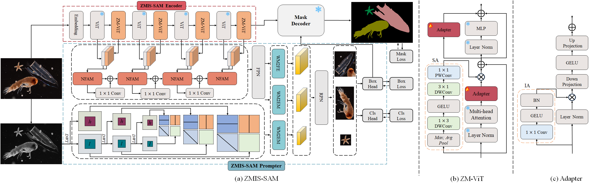
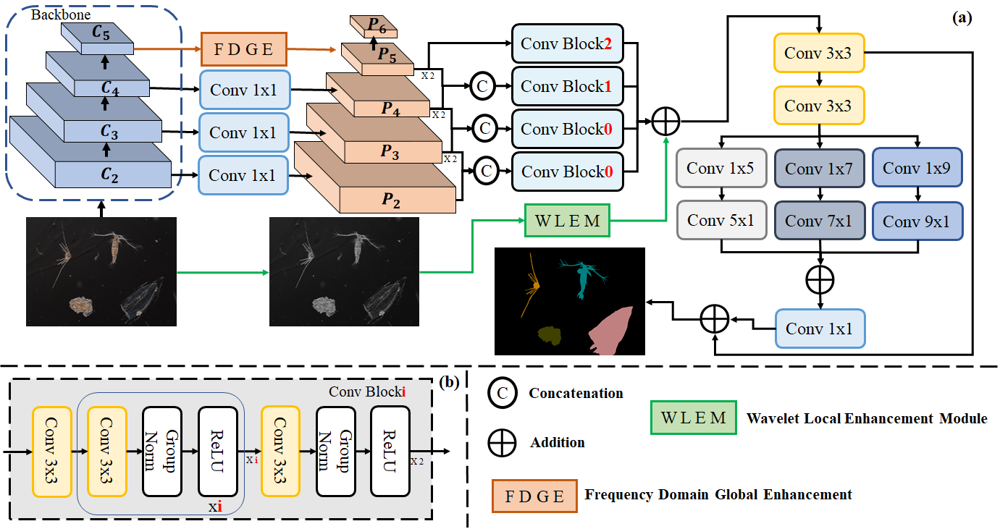
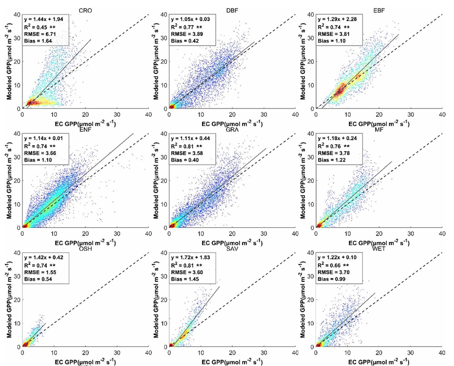
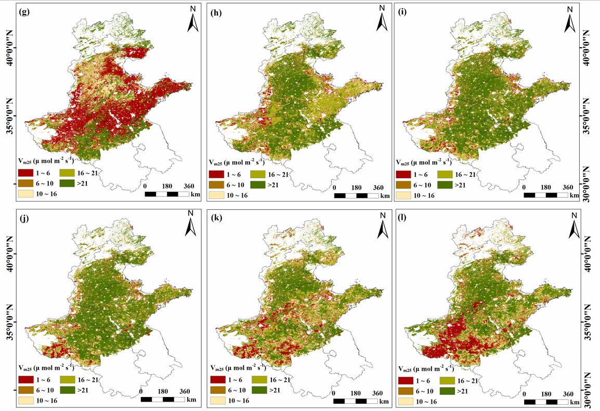

Dekun Yuan (袁德坤)
Ph.D. Candidate, China University of Petroleum (East China)
I am a Ph.D. Candidate in the College of Oceanography and Space Informatics at China University of Petroleum (East China), supervised by Professors Jie Zhang（张杰） and Zhongwei Li（李忠伟）. Prior to this, I received my M.S. degree from the College of Computer Science & Technology at Qingdao University under the supervision of Professor Yun Bai（白雲）. My research interests include deep learning, computer vision, microscopic image processing, and multimodal learning.
If you need the full text of the following papers, please contact me via email.

ZMIS-SAM: Segment Anything Model Enhanced with Wavelet Transform for Zooplankton Microscopy Image Instance Segmentation
European Conference on Computer Vision (ECCV)
Dekun. Yuan, Zhongwei. Li, Zheng. Qiao, and Jie. Zhang
[Arxiv] [Github] [Page] [Demo]
We introduce ZMIS5K, the species-rich, high-resolution zooplankton microscopy image dataset for instance segmentation. It includes 5,358 images across 47 species with 10,228 instances. To our knowledge, ZMIS-SAM is the first large vision model for instance segmentation in zooplankton microscopy images.

ZS2Net: Frequency-aware semantic segmentation for zooplankton microscopic image
Expert Systems with Applications
Dekun. Yuan, Zhongwei. Li, Leiquan. Wang, Yanping. Qi, Zheng. Qiao, and Jie. Zhang
[Arxiv] [Github] [Page] [Demo]
We construct ZMI2K, a dataset for zooplankton microscopic image segmentation, comprising 2,626 high resolution images covering 38 zooplankton species. We propose ZS2Net, the first semantic segmentation model specifically designed for zooplankton microscopic images.

Estimation of Radiation Scalar Using Deep Learning for Improved Gross Primary Productivity Estimation Based on A Light-use Efficiency Model
International Journal of Digital Earth
Yukang. Sun, Dekun. Yuan, Xin. Zheng, Shanshan. Yang, Sha Zhang, Jiahua. Zhang, and Yun. Bai
[Arxiv] [Github] [Page] [Demo]
we developed an LUE-MLP model with improved radiation scalar prediction by incorporating various meteorological and remote sensing data into the existing radiation scalar equation to improve GPP estimation.

Improving the Gross Primary Productivity Estimate by Simulating the Maximum Carboxylation Rate of the Crop Using Machine Learning Algorithms
IEEE Transactions on Geoscience and Remote Sensing
Dekun. Yuan, Sha. Zhang, Haojie. Li, Jiahua. Zhang, Shanshan. Yang, and Yun. Bai
[Arxiv] [Github] [Page] [Demo]
In this study, we obtained the optimal time-series of Vm25 by evaluating the Vm25 retrieved through the EnKF regarding the GPP simulation at different time steps. We computed and selected the variables having high correlations with Vm25 to model this factor using four ML algorithms.